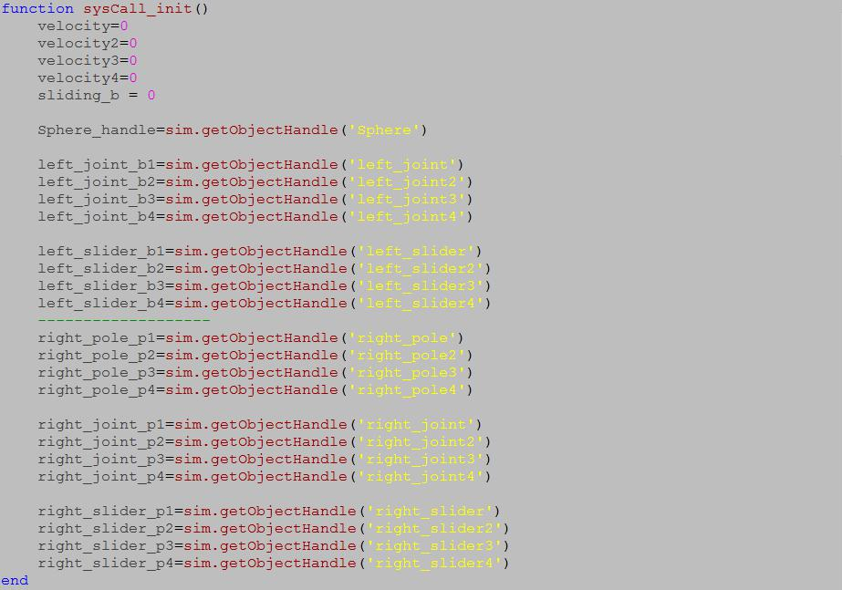
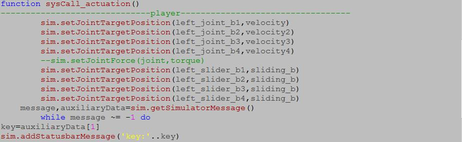
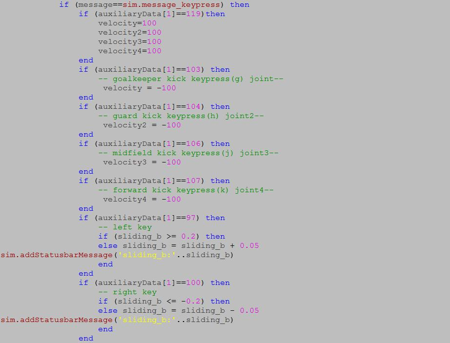
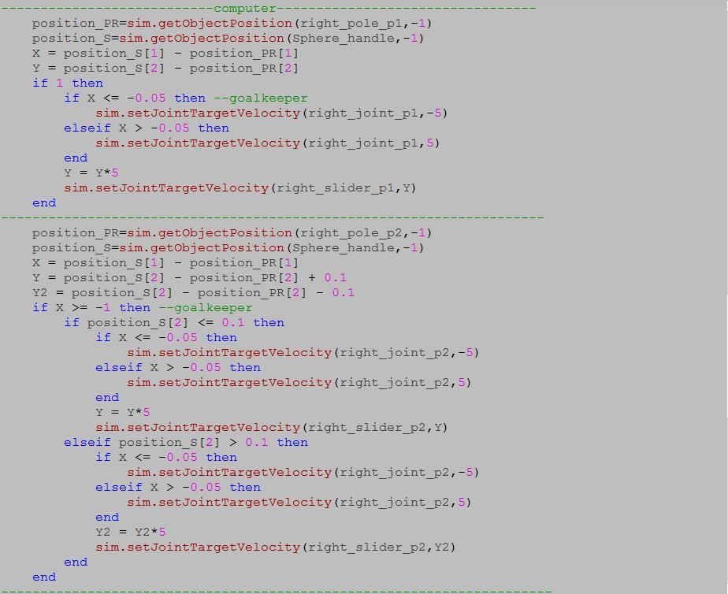

process explanation


程式解釋
velocity = 0 是要求 init 要輸入速度的這個條件給系統。
sliding_b = 0 也跟上方的velocity = 0 概念是一樣的要輸入給系統。
sim.getOjectHandle (' ') 是指處理物件的相關。
sim.setJointTargetPosition( , ) 是指設定軸的目標位置(上方處理完的物件 , 給予速度或是其他的條件 )。
message,auxiliaryData=sim.getSimulatorMessage() 是指訊息 , 輔助參數或是數據 = 模擬得到模擬器訊息。
while message ~= -1 do 是指當訊息為非 -1 得做以下的。
key=auxiliaryData[1] 是指 key = 輔助數據陣列 [1]，
sim.addStatusbarMessage('key:'..key) 是指模擬時新增狀態訊息為 key在下方狀態顯示。
velocity = 速度大小 ( 負號單純是指方向 )。

程式解釋
message,auxiliaryData=sim.getSimulatorMessage() 是指 訊息 , 輔助參數或是數據 = 模擬得到模擬器訊息。
while message ~= -1 do 是指當訊息為非 -1 得做以下的。
velocity = 速度大小 ( 負號單純是指方向 )。
if (auxiliaryData[1]==97) then
-- left key
if (sliding_b >= 0.2) then
else sliding_b = sliding_b + 0.05
sim.addStatusbarMessage('sliding_b:'..sliding_b)
end
end
if (假設輔助數據等於按鍵 = true時) then (接著)
[ if (假設sliding_b >= 0.2 =true時) then (接著)
[執行某事要求]
else (如果上方假設 = false ，要求 slideing_b = sliding_b +0.05平移位移)
模擬新增狀態訊息sliding_b的狀態在下方訊息欄呈現。
end(結束此迴圈) ]
end(結束回圈)。

程式解釋
message,auxiliaryData=sim.getSimulatorMessage() 是指從上方的這行指令到下方這行指令之間的所有程式皆啟用 訊息 , 輔助數據 = 模擬時得到模擬器的訊息。
桿子位置 = 模擬得到物件位置(處理的物件 , -1啟動)。
球的位置 = 模擬得到物件位置(處理的物件 , -1啟動)。
X = 球的位置 - 桿件的位置 (在X軸上)。
Y = 球的位置 - 桿件的位置 (在Y軸上) + 0.1(單純補償誤差)
Y2 = 球的位置 - 桿件的位置 (在Y軸上) - 0.1(單純補償誤差)
if (假設 1 = true) then (接著)
[ if (假設X <= -0.05) 接著
模擬設定軸的目標速度 ( 處理後的物件 , 速度大小(負號是指方向))
elseif (額外假設 X > -0.05) 接著
模擬設定軸的目標速度 (處理後的物件 , 速度大小)
end (結束此迴圈) ]
Y = 上方 Y軸的位置差 * 上5倍 (倍率可調)
Y2 = 上方 Y軸的位置差 * 上5倍 (倍率可調)
模擬設定軸的目標速度 (處理後的物件 , 為上方 Y 的追蹤速度)
模擬設定軸的目標速度(處理後的物間 , 上方 Y2 追蹤的速度大小)